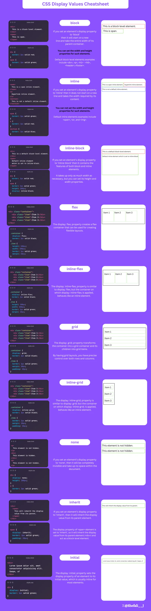

4. Intro to CSS#

4.1. What is CSS?#
CSSstands for Cascading Style SheetsCSSdescribes how HTML elements are to be displayed on screen, paper, or in other mediaCSSsaves a lot of work. It can control the layout of multiple web pages all at onceExternal stylesheets are stored in
CSSfilesSample to show different CSS
4.2. CSS Syntax#

The
selectorpoints to theHTMLelement you want to style.The
declaration blockcontains one or more declarations separated by semicolons.Each
declarationincludes a CSS propertynameand avalue, separated by a colon.Multiple
CSS declarationsare separated with semicolons, anddeclaration blocksare surrounded by curly braces.p { color: red; text-align: center; }
4.3. Insert CSS#
There are three ways of inserting a style sheet:
Inline CSS
Internal CSS
External CSS
4.3.1. Inline CSS#
An
inline stylemay be used to apply a unique style for a singleelement.To use
inline styles, add thestyleattribute to the relevantelement.The
styleattribute can contain any CSS property.Example
<!DOCTYPE html> <html> <body> <h1 style="color:blue;text-align:center;">This is a heading</h1> <p style="color:red;">This is a paragraph.</p> </body> </html>
4.3.2. Internal CSS#
An
internal style sheetmay be used if one single HTML page has a uniquestyle.The internal style is defined inside the
<style>element, inside theheadsection.Example
<!DOCTYPE html> <html> <head> <style> body { background-color: linen; } h1 { color: maroon; margin-left: 40px; } </style> </head> <body> <h1>This is a heading</h1> <p>This is a paragraph.</p> </body> </html>
4.3.3. External CSS#
With an
external style sheet, you can change the look of an entire website by changing just one file!Each HTML page must include a reference to the
external style sheetfile inside the<link>element, inside theheadsection.Example
<!DOCTYPE html> <html> <head> <link rel="stylesheet" href="mystyle.css"> </head> <body> <h1>This is a heading</h1> <p>This is a paragraph.</p> </body> </html>
4.3.4. Cascading Order#
What style will be used when there is more than one style specified for an HTML element?
All the styles in a page will “cascade” into a new “virtual” style sheet by the following rules, where number one has the highest priority:
Inline style(inside an HTML element)Externalandinternalstyle sheets (in the head section)Browser default
4.4. CSS Comments#
Commentsare used to explain the code, and may help when you edit the source code at a later date.Commentsare ignored by browsers.A CSS comment is placed inside the
<style>element, and starts with/*and ends with*/Example
/* This is a single-line comment */ p { color: red; }
Comments can also
span multiple lines:/* This is a multi-line comment */ p { color: red; }
4.5. CSS Selectors (basic)#
CSS selectors are used to “find” (or select) the HTML elements you want to style.
We can divide CSS selectors into five categories:
Simple selectors (select elements based on name, id, class)
Combinator selectors (select elements based on a specific relationship between them)
Pseudo-class selectors (select elements based on a certain state)
Pseudo-elements selectors (select and style a part of an element)
Attribute selectors (select elements based on an attribute or attribute value)
This page will explain the most basic CSS selectors.
4.5.1. The CSS element Selector#
The element selector selects HTML elements based on the element name.
Example
p { text-align: center; color: red; }
4.5.2. The CSS id Selector#
The
id selectoruses theid attributeof anHTMLelement to select a specific element.The
idof an element is unique within a page, so theid selectoris used to select one unique element!To select an element with a specific
id, write a hash (#) character, followed by the id of the element.Example
#para1 { text-align: center; color: red; }
4.5.3. The CSS class Selector#
The
class selectorselects HTML elements with a specificclass attribute.To select elements with a specific class, write a period (
.) character, followed by theclass name.Example
.center { text-align: center; color: red; }
You can also specify that only specific HTML elements should be affected by a class.
p.center { text-align: center; color: red; }
4.5.4. The CSS Universal Selector#
The
universal selector(*) selects all HTML elements on the page.Example
* { text-align: center; color: blue; }
4.5.5. All CSS Simple Selectors#
Selector |
Example |
Example description |
|---|---|---|
|
|
Selects the element with |
|
|
Selects all elements with |
|
|
Selects only |
|
|
Selects all elements |
|
|
Selects all |
|
|
Selects all |